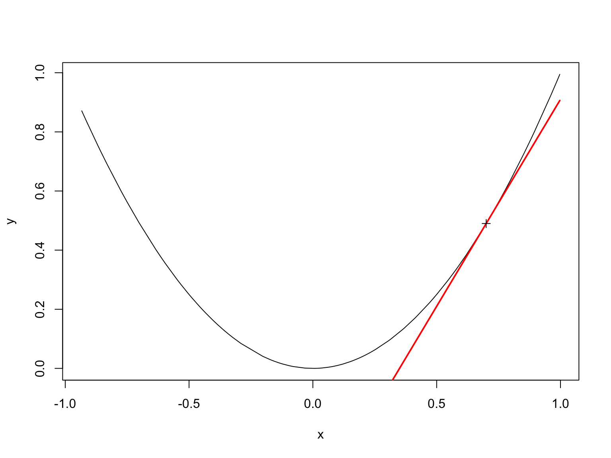

Boosting
Boosting
The basic challenge
- Take a weak learner (one slightly better than random guessing)
- Turn it into a strong learner (one with arbitrary accuracy)
The conceptual implementation
- Fit a learner to your data
- Evaluate the residuals
- Fit a learner to the residuals
- Grab the predictions from this model (which should correct the errors from the first model)
- Add the predictions to form your new predictions
- Repeat M times
The conceptual implementation
\[ F(x) = \sum_{i=1}^M F_i(x) \]
- Once we fit a learner, we keep its prediction
- We want to improve the prediction by seeing where it went wrong
- Predict the degree to which it went wrong
- Correct the original predictions
The conceptual model
- \(h(x)\) is a weak learner
- Fit \(F_1(x)\) to your data
- \(F_2(x) = F_1(x) + h(x)\)
- \(F_3(x) = F_2(x) + h(x)\)
- and so on, for M iterations
Let’s see how this might work
Gradient descent
Gradient descent
- Gradient descent is a way to minimize a function
- The idea is to follow a curve down its steepest path
Gradient descent

Gradient Descent
Gradient Descent

Gradient descent
- Sometimes a “learning rate” \(\alpha\) is added, so you don’t move the whole way
- \(F_k(x) = F_{k-1}(x) + \alpha h(x)\)
This is to slow things down
If \(\alpha\) is small and \(M\) is large, then you will get to minimum.
Loss functions
Gradient descent
- Conceptually think of residuals
- However, in reality, think in direction of gradient
Loss function minimization
- We want to minimize a chosen loss function \(L(y, X)\)
- The gradient of this loss function is \(\frac{\del L(y,X)}{\del X}\)
- This is a vector with length = number of columns of X
- Compute this at each point
- Move in that direction
Squared error loss
- \(L(y, x) = (y_i - x_i)^2/2\)
- Gradient \(G(x, y) = - (y_i - x_i)\)
- Note that this is essentially the residual
Logistic loss
- \(L(y,x) = \log(1 + e^{-yx})\)
Gradient \(G(x,y) = -ye^{-yx}/(1+e^{-yx})\)
This is often used for binary targets, where \(y\in {0,1}\), and \(x\) is the predicted probabilities
Stochastic Gradient Descent
Stochastic Gradient Descent
- We can overfit our data using just gradient descent
- Instead, fit learner to random subset of data, predict on remainder
Stochastic gradient descent
- Also, at each stage, take a random sample of predictors
- Fit the model using this random sample of predictors
Gradient boosted trees
Gradient boosted trees
- Weak learners are decision trees (in particular regression trees)
- Fit a regression tree to your data
- Compute residuals or gradients at each point
- Fit a regression tree to the residuals/gradients and predict
- Add the predictions to the previous predictions
- Repeat